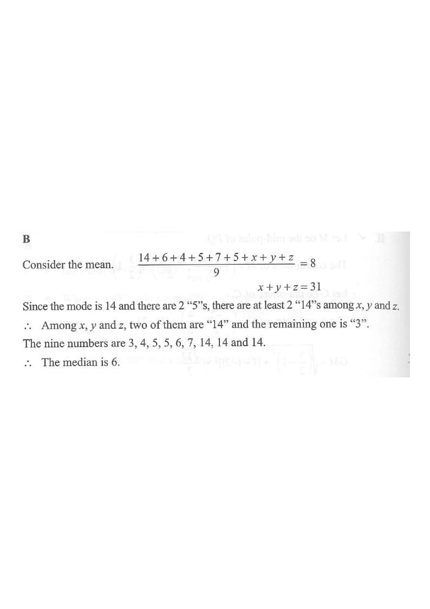

Scroll the solution to update the figure.
If the mean and the mode of the nine numbers $$14,\ 6,\ 4,\ 5,\ 7,\ 5,\ x,\ y,\ z$$ are $8$ and $14$ respectively, then the median of these nine numbers is

Step 1Use the mean to find x + y + z.
$$\frac{14+6+4+5+7+5+x+y+z}{9}=8$$ $$41+x+y+z=72$$ $$x+y+z=31$$
Hint: Sum of all nine = 9 × mean.
Step 2Use the mode = 14.
The data already contains one “14” and two “5”s.
For 14 to be the mode, 14 must appear more often than any other value.
∴ At least two of $x,y,z$ must be 14.
The value that occurs most frequently is the mode.
Step 3Determine the three unknowns.
Let two of them be 14: $14+14+(\text{third})=31$ $$\Rightarrow \text{third}=3$$
So $\{x,y,z\}=\{3,14,14\}$.
Both remaining 14’s are needed so that 14 occurs three times.
Step 4Write the nine numbers in order.
$$3,\ 4,\ 5,\ 5,\ 6,\ 7,\ 14,\ 14,\ 14$$
Sorting the full list is needed to locate the median.
Step 5Find the median.
With $n=9$ (odd), the median is the 5th value:
$$3,\ 4,\ 5,\ 5,\ \mathbf{6},\ 7,\ 14,\ 14,\ 14$$
∴ Median $=6$.
For odd n,
median = the ((n+1)/2)-th ordered value.
Question. Nine numbers have mean \\(10\\) and mode \\(12\\). Six of them are \\(12,\ 5,\ 8,\ 6,\ 9,\ 6\\), and the remaining three are \\(x,\ y,\ z\\).
(a) Find \\(x+y+z\\).
(b) Find the values of \\(x,\\ y,\\ z\\).
(c) Find the median of the nine numbers.